Automation Mesh Configuration on OpenShift hands-on Lab
In an operator-based AAP deployment, Automation Mesh is configured entirely through the AAP UI and OpenShift custom resources — not through installer inventory files. This section walks through the remote execution for extending the mesh beyond the cluster.
Lets setup the VM and connect it to Ansible Automation Platform for the execution node:
-
OpenShift Console Access:
Open the OpenShift Console at
{openshift_console_url}and log in with usernameadminand password{common_admin_password}.-
Navigate to Virtualization → VirtualMachines.
-
Select namespace:
aap-lab -
Click on
aap-lab-execution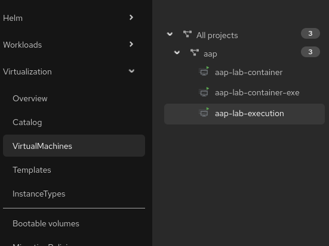
-
Click on the Open Web Console button.
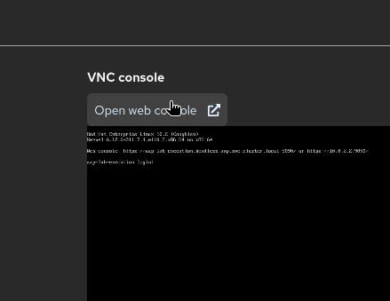
-
Use the Serial tab for terminal access.
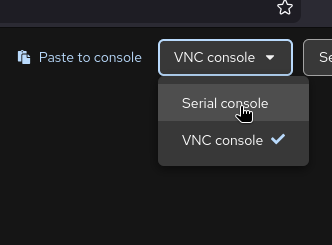
-
-
Log in to the VM using username
lab-userand password{common_user_password}. Copy and paste with CTRL+SHIFT+V in the terminal. -
Register the system with Red Hat Subscription Management and attach the subscription to the system.
sudo subscription-manager registerusername: <YOUR-RHN_LOGIN> password: <YOUR-RHN_PASSWORD>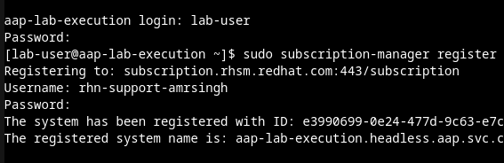
-
Enable the required repository for AAP 2.7:
sudo subscription-manager repos --enable ansible-automation-platform-2.7-for-rhel-10-x86_64-rpms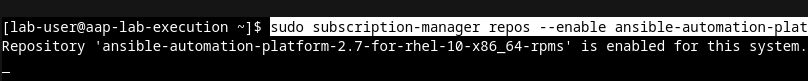
-
-
Install the required and useful utilities:
sudo dnf install -y vim ansible-core
Install Receptor on the Execution Node:
Ansible Automation Platform UI Configuration:
-
Login to the AAP UI for that go to openshift cluster and then go to Networking > Routes > Location for the aap Service open the URL in the browser in the new tab.
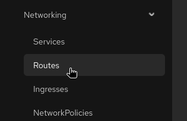
-
Go to Workloads > Secrets > aap-admin-password and copy the password to login to the AAP UI. for this lab you can use this for admin password:
{common_admin_password}.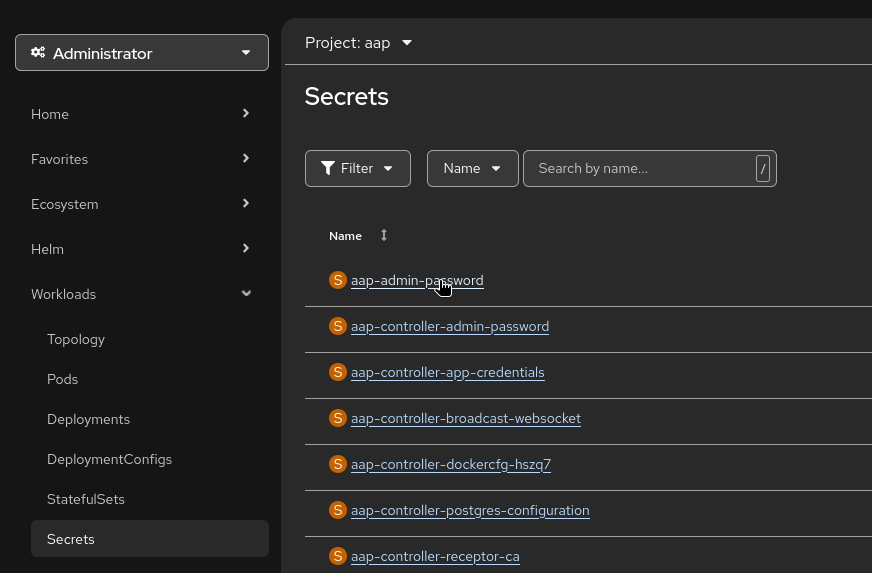
-
Download the Receptor install bundle from the AAP UI and copy it to the execution node. Use the following command to extract the bundle:
-
From the navigation panel, select Automation Execution > Infrastructure > Instances.
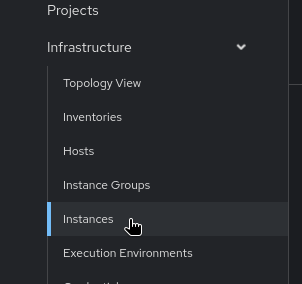
-
On the Instances list page, click Add instance. Fill in the following fields:
Field
Description
Host name
Fully qualified domain name (public DNS) or IP address. Use IP if private DNS cannot be resolved from the control cluster.
Description
(Optional) A description for the instance.
Instance state
Auto-populated (
Installed); cannot be modified.Listener port
Port for Receptor to listen on for incoming connections. Default: 27199.
Instance type
Only
executionandhopare supported on OpenShift operator deployments. -
Add the VM
aap-lab-executionFQDN from the Openshift cluster Virtualization > VirtualMachines > aap-lab > aap-lab-execution and the port27199to the instance and click Save.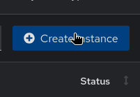
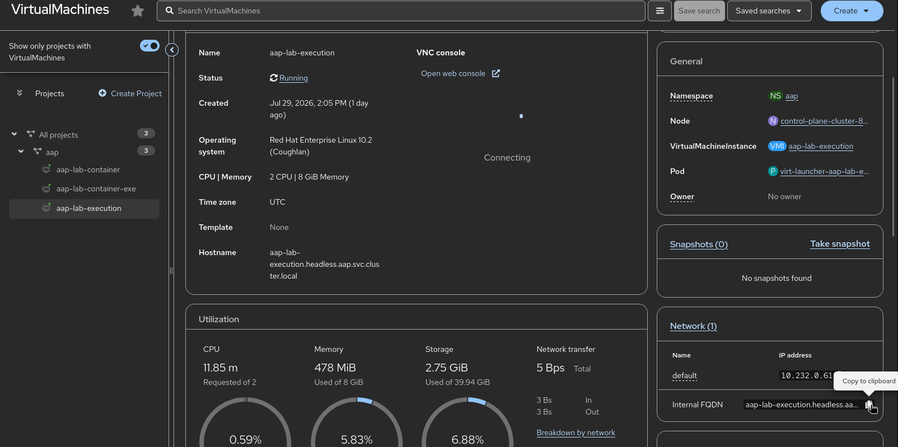
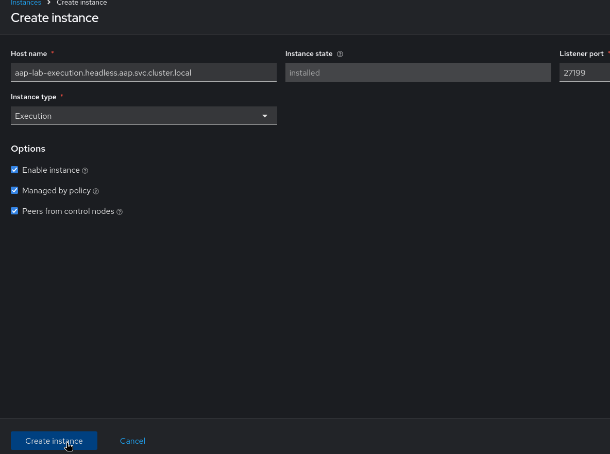
-
Copy the URL of the bundle from the AAP UI and download it on the execution node using the following command:
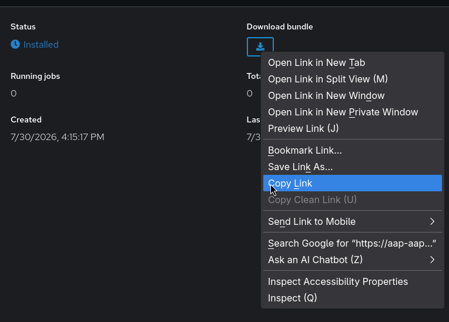
-
Setup Receptor on the Execution Node:
-
Download and Extract the bundle on the remote machine. The aap admin password is
{common_admin_password}.curl -u admin:<aap_admin_password> --output aap.tar.gz <Paste the URL of the bundle from the AAP UI>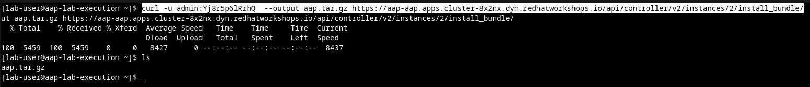
tar -xzf aap.tar.gz -
Move into the extracted directory and run the install script:
cd <extracted directory> -
Edit
inventory.ymlvim inventory.ymlall: hosts: remote-execution: ansible_host: <this-should-be-the-mesh-node-host-name> # change to the mesh node host name if its not ansible_user: lab-user # this should have the username of the remote execution node # ansible_ssh_private_key_file: ~/.ssh/<id_rsa>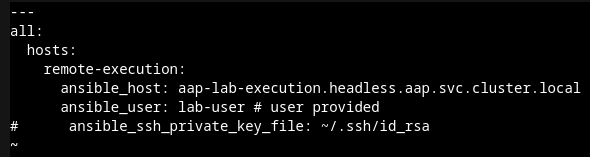
-
Install the
ansible.receptorcollection:sudo ansible-galaxy install -r requirements.yml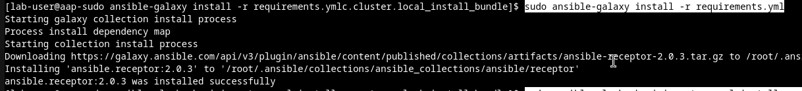
Open port 27199 for Receptor communication on the Firewall of the execution node and the communication should be allowed bi-directionally between the execution node and the control plane nodes.
-
Run the installation playbook and provide the password:
{common_admin_password}for the execution node when prompted. This will install Receptor on the execution node and configure it to connect to the control plane nodes.:sudo ANSIBLE_HOST_KEY_CHECKING=False ansible-playbook -i inventory.yml install_receptor.yml -k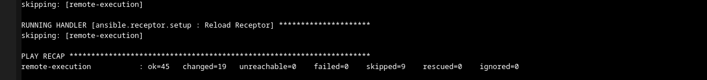
-
Once the installation is complete successfully. Proceed to the next step to verify the connection between the execution node and the control plane nodes by clicking on the Run Health Check button in the AAP UI and soon the status will show Ready for the Execution node.
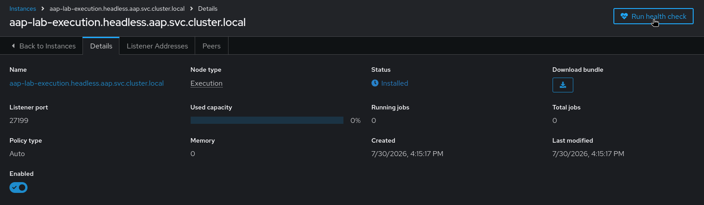
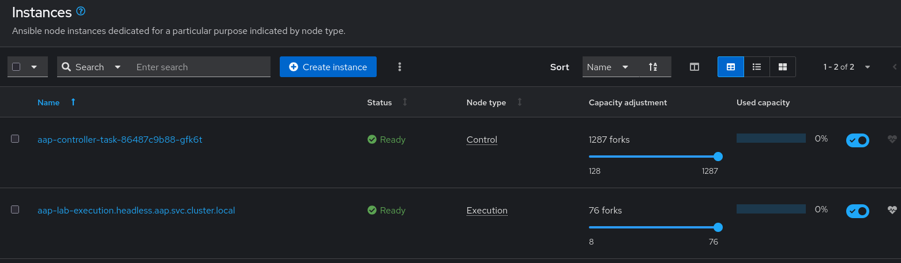
Let run a JOB on the execution node to verify if it will get executed. The job might be failing due to EE but the execution node should be the aap-lab-execution node that we have assigned.